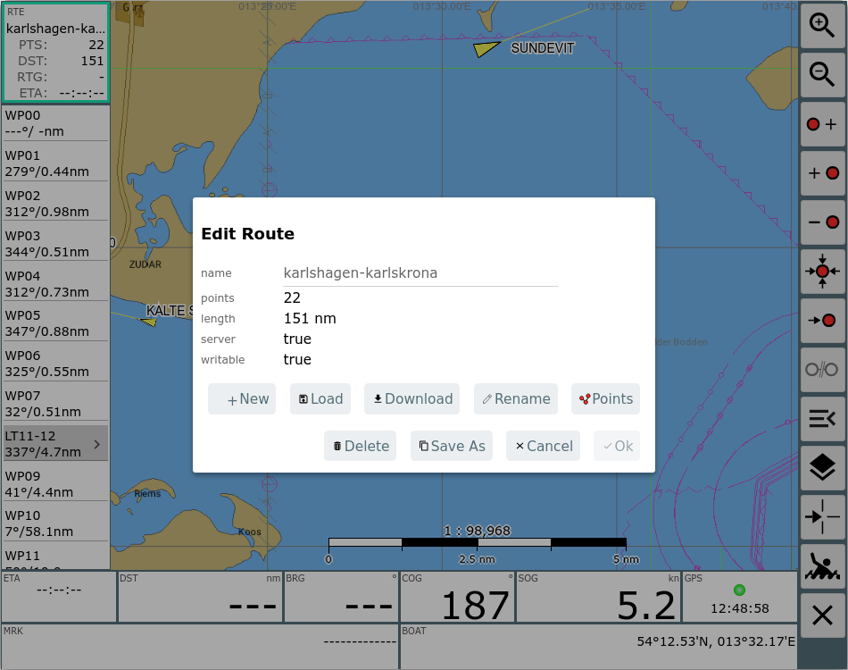
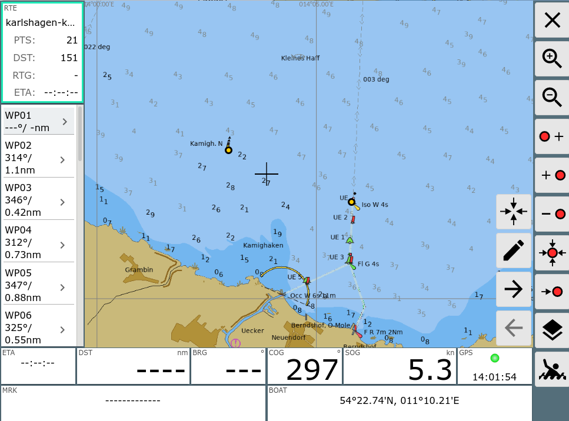

You will enter the route editor by clicking the  button on the navigation
page . Additionally you can get to it via the
button on the navigation
page . Additionally you can get to it via the  Edit button in the route's info dialog on the Files/Download
page.
Edit button in the route's info dialog on the Files/Download
page.
| Icon | Name | Function |
| ZoomIn | zoom in |
|
| ZoomOut | zoom out |
|
| NavAddAfter | add a new point to the route the chart center (cross) will be added after the point that is currently marked red |
|
| NavAdd | add a new point to the route the chart center (cross) will be added before the point that is currently marked red |
|
| NavDelete | delete the point that is currently marked red |
|
| NavToCenter | move the currently marked red point to the center of the chart
(cross) |
|
| NavGoto | start navigation to the currently marked red point |
|
| NavOverlays | show and hide Overlays | |
| MOB | man over board(see main page) | |
| Cancel | back to the navigation page |
At this page you can create and edit a route.
There is always a currently selected point within the
route. It is marked red on the chart and marked grey in the list on the
left side. You can change the selected point by clicking a different
point on the chart or in the list on the left side.
If you are editing the currently active route, the route info at the left
side will display a red border (otherwise green).
Leaving the editor will take you back to the active route.
All changes become effective immediately - there is no undo.
At the left side you see a list of all the route's waypoints including
courses and distances. On top of the list the number of waypoints, the overall route
length and - if the route is active - the estimated ETA are displayed.
By clicking an already selected waypoint in the list you open an
edit dialog to change its name or position.
Clicking on the route info on the left side opens a dialog.

Within this dialog you can change the name of the route, select a new route to be edited, copy the route, delete it, empty or invert it.
Clicking Edit will take you to the route list. At this page you can delete and edit all points, change the name, invert or load a new route.
Clicking the bottom left panel activates some additional buttons.

Using those buttons you can move between the points in the route or you
can edit the selected waypoint.
Clicking the bottom right panel centers the chart at the boat's position.
If an overlay is visible (like in the picture) - or within ocharts you can open a dialog by clicking an object on the chart. This dialog provides some additional functions.

You can insert the object you clicked into the route (befor or after the current red point). This way you can easily e.g. use points from a waypoint file to create your routes.
If the overlay is a route you can insert the part after the clicked point into your current route.

The dialog shows the selected start point of the route and you can decide to insert before or after your current red point.